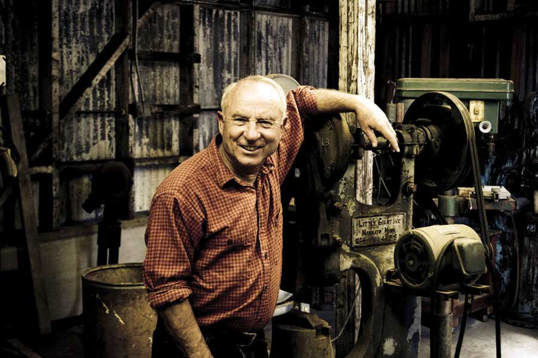
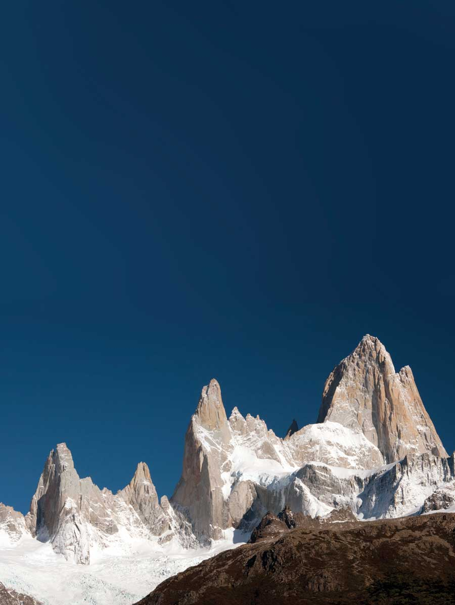
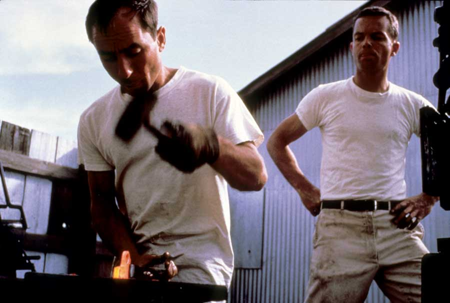
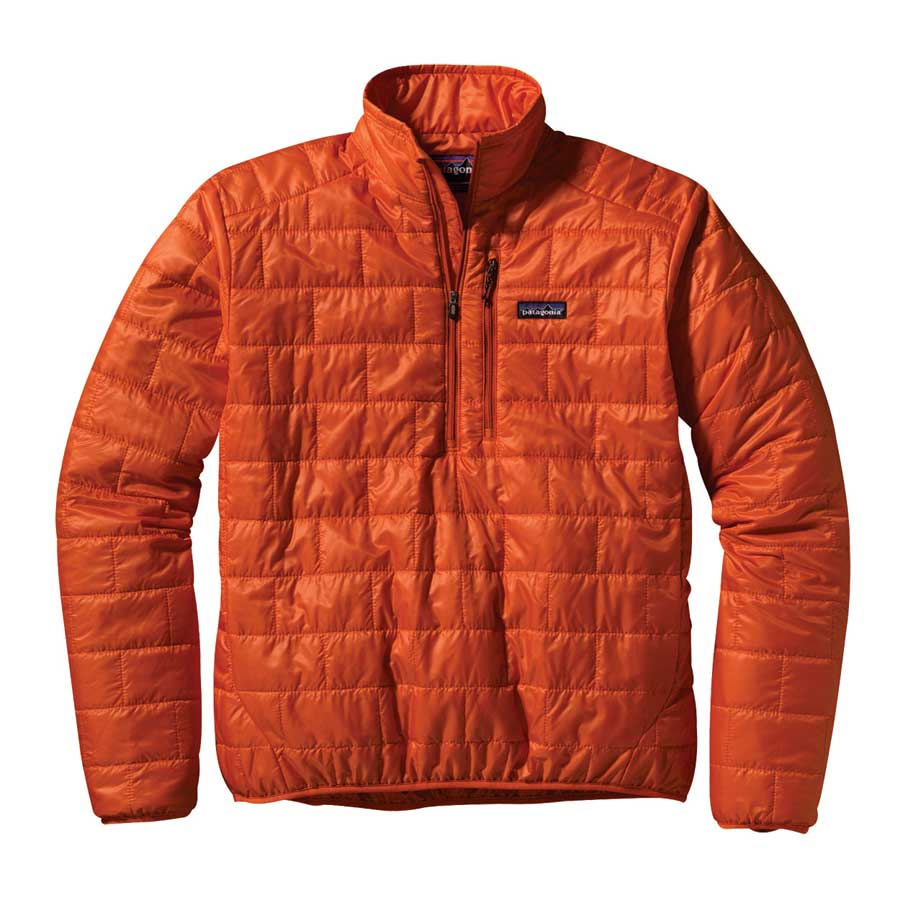
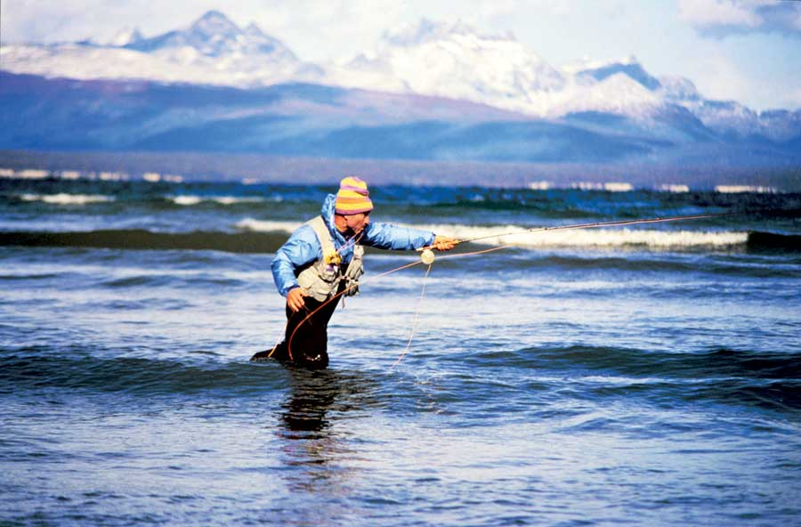

Established in 1972, Patagonia is an outdoor-clothing company known for its green business model. Under the leadership of its founder and resident philosopher, Yvon Chouinard, Patagonia has grown from humble beginnings to a $330 million enterprise. According to Chouinard, Patagonia exists not to make money but to, “prove that it’s possible to do the right thing for the planet and still make a profit. After all,” Chouinard is fond of quoting environmental leader David Bower, “there is no business to be done on a dead planet.”
Chouinard’s introduction to business began in the 1950s. Annoyed by the soft iron pitons (metal spikes through which rope can be secured) used in rock climbing, he went to a junkyard, bought an old forge, anvil, tongs and hammers and taught himself to blacksmith. It wasn’t long before he was making and selling hard steel pitons from the back of his car for $1.50 apiece. In 1965, he formed Chouinard Equipment with aeronautical engineer and fellow climber Tom Frost. Together, they redesigned and improved almost every piece of climbing equipment, and in the process built Chouinard Equipment into the largest supplier of climbing hardware in the United States.
By 1970, however, Chouinard Equipment was facing a providential dilemma. The hard steel pitons that had become the company’s trademark were damaging and disfiguring rock faces as climbers hammered them in and out of cracks. This was Chouinard’s first environmental challenge, and he met it with directness and ingenuity.
Deciding to phase out pitons, he and Frost focused on creating an environmentally sound alternative - aluminum chocks that could be wedged, instead of hammered, into cracks. To help educate its customers about what it was doing and why, Chouinard Equipment published its first catalog with an editorial on “clean climbing” (meaning climbing that does no damage to rock faces) by Sierra climber Doug Robinson. Within months, the piton business had dropped to almost nothing, chocks were selling faster than they could be made, and Chouinard had learned a vital lesson that has guided every business decision he has made since: “Build the best product, cause no unnecessary harm, and use business to inspire and implement solutions to the environmental crisis.”
In 1973, Chouinard and Frost moved on to multifunctional outdoor clothing and changed the company name to Patagonia, a name that embodies romantic visions of glaciers tumbling into fjords, jagged windswept peaks, gauchos and condors. To emphasize the connection to the real Patagonia - the southernmost region of South America and the Andes mountains, including Argentina and Chile - they designed a logo based on the Fitzroy skyline, with cloudy skies, rugged peaks and a blue ocean. In addition to clothing, today Patagonia makes packs and luggage for outdoor adventures.
Like the climbing equipment business, however, making and selling outdoor clothing came with inherent risks and challenges. In fact, the first product to wear the Patagonia label nearly caused the company to go bankrupt. Patagonia had contracted with a manufacturer in Hong Kong, but shipments were late, quality was terrible and the shirts shrank. As Chouinard puts it, “We learned the hard way that there was a big difference between running a blacksmith shop and being in the rag business.” The disaster also strained Chouinard’s partnership with Frost to the breaking point. The two friends parted ways in 1975, leaving Yvon and his wife, Malinda, as the sole owners of a struggling, debt-ridden company.
With the help of a bright young CEO named Kristine McDivitt, Patagonia gradually found its feet and began tackling its larger goal of manufacturing products in environmentally sound ways. To this end, the Patagonia team developed a product design philosophy. Based on the first phrase of Patagonia’s mission statement, “Build the best product,” it gave the company’s designers a set of questions to use to determine whether a product would meet Patagonia’s standards: Is it functional? Is it multifunctional? Is it durable? Does it fit our customer? Is it as simple as possible? Is it an innovation or an invention? Is it a global design? Is it easy to care for and clean? Does it have any added value? Is it art? Is it authentic? Is it timely? Does it cause any unnecessary harm?
With these standards in place, Patagonia began taking an even harder look at how best to determine the environmental impact of its products on the planet. In 1991, Patagonia did an environmental analysis of the fibers it used most, which led the company to switch to 100 percent organic cotton in 1996, and to the establishment of an assessment program called the “Footprint Chronicles” in 2007. Every aspect of a product’s life cycle was examined - from where and how the fibers were produced to the kinds of dyes and shipping methods used.
“Asking a lot of questions about our processes has been difficult,” Chouinard says, “but what does it mean to lead an examined life? It means to be curious and ask questions. The reason you ask those questions is because you want to do the right thing, not only for yourself, but for the people around you as well.”
Like Patagonia itself, Chouinard has stepped (albeit reluctantly) into the limelight, not only as a champion of the environment, but as a business maverick who is willing to go out on a limb to make his points.
“I always avoided thinking of myself as a businessman,” he says. “But one day it dawned on me that I was a businessman and would probably be one for a long time. I also knew that I would never be happy playing by the normal rules of business. If I had to be a businessman, I was going to do it on my own terms.”
Chouinard’s terms are unlike anything previously known in corporate America. They include employee benefits such as flex-time so that folks can go surfing or skiing when conditions are right, or staying home to take care of a sick child; freedom to dress as he and his employees like (including bare feet); and a willingness to “blur the distinction between work and play and family.”
Another element that distinguishes Patagonia from most companies is its motivation. “We’re not in business to make clothing,” Chouinard says. “We’re in business to ask questions and make choices that prove to the rest of the world that it’s possible to be environmentally responsible and profitable, too. Profits happen when you do everything right. That’s one of the hardest things to get across to a new person working for us - the more quality we put into the product, the more profit we make.
Chouinard argues that a company has a responsibility not only for how it makes a product, but also for what that product is. To illustrate his point, he uses the metaphor of a company that is one of the best in the world. The example company makes one of the best products of its kind and is one of the best places to work. But the product it makes is land mines because there’s a demand for them. As long as there’s a demand, that company will keep making land mines.
“I believe that is fundamentally wrong,” Chouinard says. “There is no right way to do the wrong thing.”
Rather than let customer demand dictate change - a practice Chouinard thinks prevents public corporations from acting responsibly when they realize a product is flawed or bad for the environment - Patagonia strives to implement the changes scientists say are necessary to save the planet.
“The basic problem is public ownership of corporations,” Chouinard says. “For example, automobile companies knew a long time ago that it was evil to be making SUVs. But they were waiting for the customer to tell them to change. They didn’t want to retool because to make a long-term decision like that would cause stock prices to go down, and they all own stock options. I think it is absolutely criminal to allow the people running a company to have stock options. They won’t make the tough decisions they need to make. Since we are not a public company, we can do whatever we want. We can take whatever risk is necessary and prove it is good business.”
Despite today’s faltering economy, Patagonia is growing steadily. 2009 was the best year Patagonia has had in years, and according to Chouinard, it was because of the recession.
“I love recessions for business reasons,” he says. “No. 1, a recession kills the competition. No. 2, your customers stop being silly and stop buying fashion stuff. They buy things they need and things that will last a long time. They don’t mind paying more as long as it’s high quality. What they do is what we should all be doing, which is consuming less and consuming better.”
With Chouinard at the helm, Patagonia has embarked on a number of other groundbreaking projects. In particular, its Common Threads Garment Recycling program - which encourages customers to return any worn out garment for recycling into new clothing - has been raising eyebrows. Launched in 2005, it is part of the company’s commitment to take responsibility for everything it makes. When asked about how Common Threads got started, Chouinard smiles and says, “That program came about because of all those books that started appearing about peak oil about five years ago. I gave copies to all our managers and asked them, ‘What are we going to do about it? Are we going to sit back and wait for it to hit us in the back of the head, or are we going to be proactive?’
“The head of the fabric lab came to me and said, ‘Here’s what the design lab is going to do. By 2010, we want this company to be responsible for a product from birth to birth. We want to make every product out of recycled and recyclable fibers.’ In other words, we sell you a shirt, and when you’re done with it, give it back to us and we’ll make another shirt out of it.”
Chouinard then adds, “What if anybody who made anything had the responsibility to take that thing back? It would be fantastic!”
Despite Patagonia’s ongoing success, both financially and in raising the bar on environmental responsibility, Chouinard is frankly cynical about the future.
“I am totally pessimistic,” he says. “I’m a member of the Doombat Society. Why should I be optimistic? You tell me,” he adds with a laugh.
“There’s no reason to be optimistic at all. I think society is going to go into survival mode, because there is going to be a crash. The only things society should be working on are products that people need, not products people want because they are bored. Things like food, alternative energy and land for agriculture; those are the only safe investments. It doesn’t depress me,” he continues, “because I’m active. I’m doing what I can. The cure for depression is action, and as long as I feel like this company is not part of the problem, but part of the solution, I’m not depressed. Besides, there’s no difference between an optimist who says ‘Don’t bother, it’ll all be fine,’ and the pessimist who says ‘Don’t bother it’s all hopeless.’
“You want to protect what you love. That’s also why I can look at any world problem, I don’t care what it is, and take it back to an environmental issue. Take cancer. When I came out with my book (Let My People Go Surfing: The Education of a Reluctant Businessman) in 2006, I said that one in eight women will develop breast cancer in her lifetime. That’s up from one in 40 before the use of pesticides. And yet only 3 percent of the money that goes to breast cancer research goes into figuring out the environmental causes. Or look at the genocide in Rwanda. They had the highest population per square foot in Africa and limited resources. They were starving. So what were they fighting over? The environment. Iraq? It’s all about oil. Even the Pentagon says it is going to be endless war now because we’re going to be fighting over the last resources.”
So what’s next for Chouinard and Patagonia?
“Well, I know it sounds corny, but the main stockholder in my company is the planet, and I measure our success by how much good we’ve done for that stockholder each year,” he says. “If you ask me what our profits were last year I couldn’t tell you. That’s not why I am in business. So whatever we do next, the goal will be to do it right. It’s really a Zen thing where you don’t focus just on the target. The arrow goes straight when you do everything correctly. I learned that from climbing, too. It’s how you get up there that counts. As for me,” he says with a grin, “I like to leave room for serendipity. You never know what can happen. I hate to put anything on my calendar, even though it might be really fun to do, because something even more fun might come up and I wouldn’t be able to do it. So we’ll see ... we’ll just have to see.”
|
 PATAGONIA/TIM DAVIS Patagonia founder Yvon Chouinard in the company’s original workshop in Ventura, Calif. |
 ISTOCKPHOTO The Fitzroy skyline in the Argentinan region of the Patagonia mountains is the basis for Patagonia’s logo. |
 PATAGONIA Chouinard (left) and Tom Frost hammering out the innovative steel pitons that sparked their company’s success. |
|
 PATAGONIA Patagonia broke new ground with its recycled and recyclable outerwear. |
 PATAGONIA/DOUG TOMPKINS Not just a suit: Chouinard’s business and personal life are dedicated to life outdoors. |
|